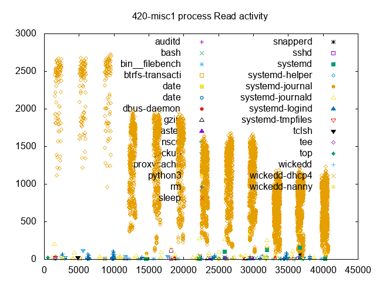
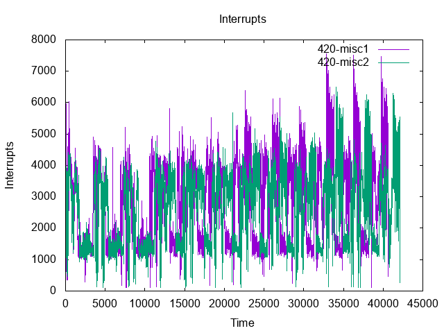
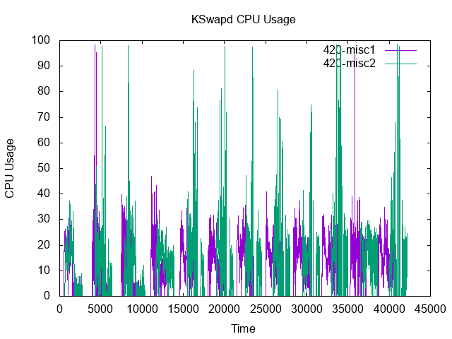
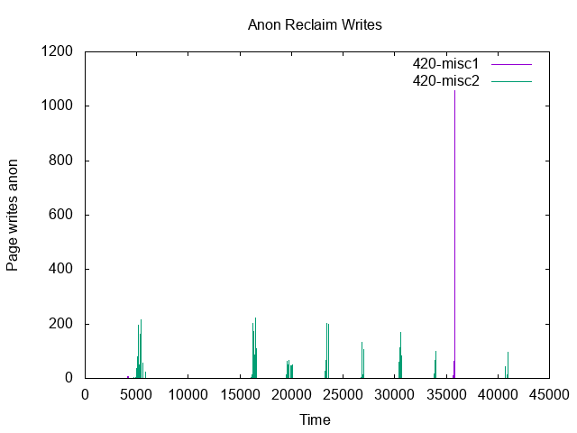
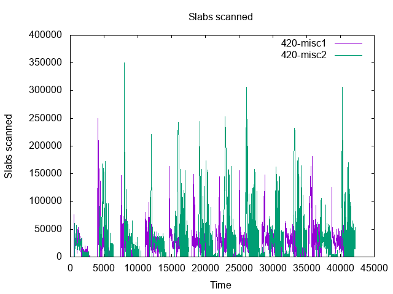
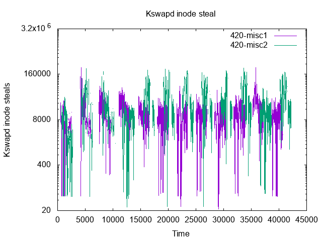

| 420 | 420 | ||||
|---|---|---|---|---|---|
| misc1 | misc2 | ||||
| Min | webproxy-1 | 680.66 | ( 0.00%) | 640.07 | ( -5.96%) |
| Min | webproxy-6 | 2118.89 | ( 0.00%) | 2009.80 | ( -5.15%) |
| Min | webproxy-9 | 2510.76 | ( 0.00%) | 2267.71 | ( -9.68%) |
| Min | webproxy-16 | 2732.15 | ( 0.00%) | 2659.88 | ( -2.65%) |
| Hmean | webproxy-1 | 691.71 | ( 0.00%) | 662.38 | ( -4.24%) |
| Hmean | webproxy-6 | 2201.92 | ( 0.00%) | 2086.71 | ( -5.23%) |
| Hmean | webproxy-9 | 2532.54 | ( 0.00%) | 2333.88 | ( -7.84%) |
| Hmean | webproxy-16 | 2754.75 | ( 0.00%) | 2693.90 | ( -2.21%) |
| Stddev | webproxy-1 | 14.36 | ( 0.00%) | 20.13 | ( -40.18%) |
| Stddev | webproxy-6 | 73.38 | ( 0.00%) | 105.08 | ( -43.19%) |
| Stddev | webproxy-9 | 32.68 | ( 0.00%) | 96.26 | (-194.51%) |
| Stddev | webproxy-16 | 20.28 | ( 0.00%) | 31.51 | ( -55.39%) |
| CoeffVar | webproxy-1 | 2.08 | ( 0.00%) | 3.04 | ( -46.34%) |
| CoeffVar | webproxy-6 | 3.33 | ( 0.00%) | 5.03 | ( -50.96%) |
| CoeffVar | webproxy-9 | 1.29 | ( 0.00%) | 4.12 | (-219.26%) |
| CoeffVar | webproxy-16 | 0.74 | ( 0.00%) | 1.17 | ( -58.89%) |
| Max | webproxy-1 | 708.08 | ( 0.00%) | 678.37 | ( -4.20%) |
| Max | webproxy-6 | 2248.28 | ( 0.00%) | 2209.06 | ( -1.74%) |
| Max | webproxy-9 | 2570.37 | ( 0.00%) | 2446.47 | ( -4.82%) |
| Max | webproxy-16 | 2771.19 | ( 0.00%) | 2721.87 | ( -1.78%) |
| BHmean-50 | webproxy-1 | 708.08 | ( 0.00%) | 678.37 | ( -4.20%) |
| BHmean-50 | webproxy-6 | 2248.28 | ( 0.00%) | 2209.06 | ( -1.74%) |
| BHmean-50 | webproxy-9 | 2570.37 | ( 0.00%) | 2446.47 | ( -4.82%) |
| BHmean-50 | webproxy-16 | 2771.19 | ( 0.00%) | 2721.87 | ( -1.78%) |
| BHmean-95 | webproxy-1 | 697.38 | ( 0.00%) | 674.13 | ( -3.33%) |
| BHmean-95 | webproxy-6 | 2245.93 | ( 0.00%) | 2127.41 | ( -5.28%) |
| BHmean-95 | webproxy-9 | 2543.58 | ( 0.00%) | 2368.44 | ( -6.89%) |
| BHmean-95 | webproxy-16 | 2766.18 | ( 0.00%) | 2711.24 | ( -1.99%) |
| BHmean-99 | webproxy-1 | 697.38 | ( 0.00%) | 674.13 | ( -3.33%) |
| BHmean-99 | webproxy-6 | 2245.93 | ( 0.00%) | 2127.41 | ( -5.28%) |
| BHmean-99 | webproxy-9 | 2543.58 | ( 0.00%) | 2368.44 | ( -6.89%) |
| BHmean-99 | webproxy-16 | 2766.18 | ( 0.00%) | 2711.24 | ( -1.99%) |
| 420 | 420 | ||||
|---|---|---|---|---|---|
| misc1 | misc2 | ||||
| User | 578.83 | 563.22 | |||
| System | 29590.11 | 30316.12 | |||
| Elapsed | 40660.80 | 42131.57 | |||
| 420 | 420 | ||||
|---|---|---|---|---|---|
| misc1 | misc2 | ||||
| Minor Faults | 45795155 | 41207077 | |||
| Major Faults | 9462 | 10465 | |||
| Swap Ins | 8 | 395 | |||
| Swap Outs | 1433 | 4755 | |||
| Allocation stalls | 0 | 0 | |||
| DMA allocs | 741247 | 782756 | |||
| DMA32 allocs | 116869892 | 79866866 | |||
| Normal allocs | 317061685 | 341297259 | |||
| Movable allocs | 0 | 0 | |||
| Direct pages scanned | 200475 | 192982 | |||
| Kswapd pages scanned | 46811951 | 32881078 | |||
| Kswapd pages reclaimed | 45469548 | 31382012 | |||
| Direct pages reclaimed | 190540 | 158105 | |||
| Kswapd efficiency | 97% | 95% | |||
| Kswapd velocity | 1151.280 | 780.438 | |||
| Direct efficiency | 95% | 81% | |||
| Direct velocity | 4.930 | 4.580 | |||
| Percentage direct scans | 0% | 0% | |||
| Zone normal velocity | 1156.210 | 785.018 | |||
| Zone dma32 velocity | 0.000 | 0.000 | |||
| Zone dma velocity | 0.000 | 0.000 | |||
| Page writes by reclaim | 1433.000 | 4755.000 | |||
| Page writes file | 0 | 0 | |||
| Page writes anon | 1433 | 4755 | |||
| Page reclaim immediate | 100 | 43 | |||
| Sector Reads | 84847308 | 83661576 | |||
| Sector Writes | 811307228 | 781962428 | |||
| Page rescued immediate | 0 | 0 | |||
| Slabs scanned | 62864402 | 64035677 | |||
| Direct inode steals | 871613 | 5919125 | |||
| Kswapd inode steals | 28223811 | 37481908 | |||
| Kswapd skipped wait | 0 | 0 | |||
| THP fault alloc | 5 | 0 | |||
| THP fault fallback | 394 | 399 | |||
| THP collapse alloc | 162 | 206 | |||
| THP collapse fail | 427 | 402 | |||
| THP split | 1 | 0 | |||
| THP split failed | 0 | 0 | |||
| Compaction stalls | 728 | 493 | |||
| Compaction success | 451 | 314 | |||
| Compaction failures | 277 | 179 | |||
| Compaction pages moved | 0 | 0 | |||
| Compaction move failure | 0 | 0 | |||
| Compaction cost | 2740 | 2887 | |||
| NUMA alloc hit | 200296201 | 156518974 | |||
| NUMA alloc miss | 60290902 | 98582558 | |||
| NUMA interleave hit | 0 | 0 | |||
| NUMA alloc local | 200292261 | 156514820 | |||
| NUMA base PTE updates | 35215024 | 32463845 | |||
| NUMA huge PMD updates | 5148 | 7836 | |||
| NUMA page range updates | 37850800 | 36475877 | |||
| NUMA hint faults | 31393612 | 27351675 | |||
| NUMA hint local faults | 25642875 | 22775077 | |||
| NUMA hint local percent | 81 | 83 | |||
| NUMA pages migrated | 1392277 | 1297711 | |||
| AutoNUMA cost | 157241 | 137010 | |||
| 420 | 420 | ||||
|---|---|---|---|---|---|
| misc1 | misc2 | ||||
| Mean | sda-avgqusz | 69.66 | 75.42 | ||
| Mean | sda-avgrqsz | 61.47 | 68.70 | ||
| Mean | sda-await | 3902.77 | 6099.69 | ||
| Mean | sda-r_await | 280.63 | 291.87 | ||
| Mean | sda-w_await | 7524.90 | 11907.51 | ||
| Mean | sda-svctm | 91.78 | 135.27 | ||
| Mean | sda-rrqm | 0.09 | 0.03 | ||
| Mean | sda-wrqm | 0.75 | 0.80 | ||
| Mean | sdb-avgqusz | 16.55 | 17.48 | ||
| Mean | sdb-avgrqsz | 18.48 | 19.66 | ||
| Mean | sdb-await | 82.44 | 131.68 | ||
| Mean | sdb-r_await | 6.28 | 6.32 | ||
| Mean | sdb-w_await | 158.60 | 257.04 | ||
| Mean | sdb-svctm | 3.67 | 4.30 | ||
| Mean | sdb-rrqm | 0.00 | 0.00 | ||
| Mean | sdb-wrqm | 48.58 | 44.40 | ||
| Mean | sdc-avgqusz | 15.83 | 15.34 | ||
| Mean | sdc-avgrqsz | 18.42 | 19.52 | ||
| Mean | sdc-await | 79.33 | 129.54 | ||
| Mean | sdc-r_await | 6.18 | 29.99 | ||
| Mean | sdc-w_await | 152.47 | 229.09 | ||
| Mean | sdc-svctm | 3.08 | 4.23 | ||
| Mean | sdc-rrqm | 0.00 | 0.00 | ||
| Mean | sdc-wrqm | 48.19 | 43.40 | ||
| Mean | sdd-avgqusz | 11.96 | 12.44 | ||
| Mean | sdd-avgrqsz | 18.52 | 20.43 | ||
| Mean | sdd-await | 65.50 | 115.34 | ||
| Mean | sdd-r_await | 4.13 | 4.62 | ||
| Mean | sdd-w_await | 126.87 | 226.05 | ||
| Mean | sdd-svctm | 3.86 | 4.24 | ||
| Mean | sdd-rrqm | 0.00 | 0.00 | ||
| Mean | sdd-wrqm | 47.75 | 45.51 | ||
| Mean | sde-avgqusz | 10.60 | 10.28 | ||
| Mean | sde-avgrqsz | 18.41 | 20.27 | ||
| Mean | sde-await | 58.19 | 105.69 | ||
| Mean | sde-r_await | 3.16 | 12.94 | ||
| Mean | sde-w_await | 113.21 | 198.45 | ||
| Mean | sde-svctm | 3.69 | 4.06 | ||
| Mean | sde-rrqm | 0.00 | 0.00 | ||
| Mean | sde-wrqm | 46.86 | 43.95 | ||
| Max | sda-avgqusz | 154.57 | 163.84 | ||
| Max | sda-avgrqsz | 530.00 | 521.16 | ||
| Max | sda-await | 108136.91 | 135744.19 | ||
| Max | sda-r_await | 106715.50 | 67424.50 | ||
| Max | sda-w_await | 193764.51 | 271488.38 | ||
| Max | sda-svctm | 10000.00 | 10004.00 | ||
| Max | sda-rrqm | 66.60 | 17.80 | ||
| Max | sda-wrqm | 98.40 | 27.00 | ||
| Max | sdb-avgqusz | 268.56 | 284.10 | ||
| Max | sdb-avgrqsz | 481.39 | 489.69 | ||
| Max | sdb-await | 15061.94 | 16152.37 | ||
| Max | sdb-r_await | 685.00 | 546.21 | ||
| Max | sdb-w_await | 30123.89 | 32304.74 | ||
| Max | sdb-svctm | 2028.00 | 1244.50 | ||
| Max | sdb-rrqm | 0.20 | 0.00 | ||
| Max | sdb-wrqm | 371.80 | 348.60 | ||
| Max | sdc-avgqusz | 268.73 | 276.11 | ||
| Max | sdc-avgrqsz | 480.00 | 490.67 | ||
| Max | sdc-await | 15351.00 | 34251.29 | ||
| Max | sdc-r_await | 1370.00 | 63902.00 | ||
| Max | sdc-w_await | 30701.99 | 34184.07 | ||
| Max | sdc-svctm | 454.18 | 1245.00 | ||
| Max | sdc-rrqm | 0.00 | 0.20 | ||
| Max | sdc-wrqm | 371.40 | 337.70 | ||
| Max | sdd-avgqusz | 282.66 | 276.53 | ||
| Max | sdd-avgrqsz | 494.77 | 490.49 | ||
| Max | sdd-await | 15950.28 | 23242.35 | ||
| Max | sdd-r_await | 463.05 | 600.88 | ||
| Max | sdd-w_await | 31900.57 | 46484.70 | ||
| Max | sdd-svctm | 3238.67 | 1242.50 | ||
| Max | sdd-rrqm | 0.30 | 0.10 | ||
| Max | sdd-wrqm | 357.60 | 409.10 | ||
| Max | sde-avgqusz | 185.32 | 252.80 | ||
| Max | sde-avgrqsz | 494.77 | 489.69 | ||
| Max | sde-await | 15944.32 | 24456.08 | ||
| Max | sde-r_await | 440.13 | 36017.50 | ||
| Max | sde-w_await | 31888.63 | 48912.16 | ||
| Max | sde-svctm | 3238.67 | 1243.00 | ||
| Max | sde-rrqm | 0.10 | 0.20 | ||
| Max | sde-wrqm | 339.80 | 402.40 | ||
|
 |
 | |||
|  | ||
 | ||
 |  | |
|  |  |  |
|  |  | |